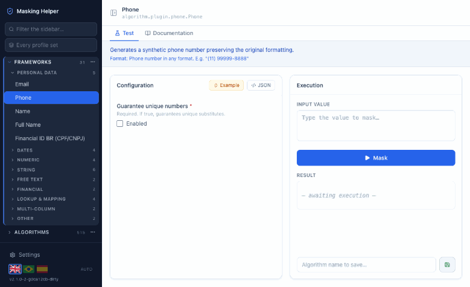

Entiende, prueba y construye algoritmos de enmascaramiento de Delphix — en tu propia máquina.
Descubre qué framework de enmascaramiento encaja con tus datos, pruébalo con valores reales y obtén una configuración lista para usar — sin crear un Rule Set ni depender de un Masking Engine.

Cada uno de los 31 frameworks de enmascaramiento explicado en lenguaje claro: qué hace, qué espera como entrada y qué cambia cada parámetro. Se acabó deducir por el nombre del campo.
Ejecuta un algoritmo con un valor real y ve la salida al instante. Prueba una configuración, cambia un campo, vuelve a ejecutar — el ciclo dura segundos en vez de una ejecución de job.
Describe el problema con tus palabras y recibe un algoritmo configurado, guardado y listo para ejecutar. No necesitas saber de antemano qué framework usar.
Describe qué necesitas enmascarar y el asistente elige el framework y lo configura. Antes de guardar nada, ejecuta el algoritmo de verdad con esa configuración — si no funciona, no se guarda nada y se te explica por qué. Una configuración que parece plausible pero falla nunca llega hasta ti.
Por defecto funciona con un modelo local, así que nada sale de tu máquina.
Todos los frameworks documentados por completo — comportamiento, formato de entrada, ejemplos de entrada → salida y cada parámetro de configuración. Cada ejemplo se produjo ejecutando el algoritmo de verdad, nunca estimado.
La misma referencia en PDF listo para imprimir, uno por idioma.
La aplicación, este sitio y la guía de referencia están disponibles en inglés, portugués y español.